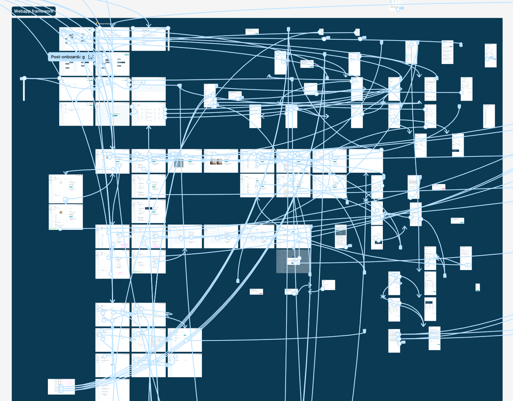
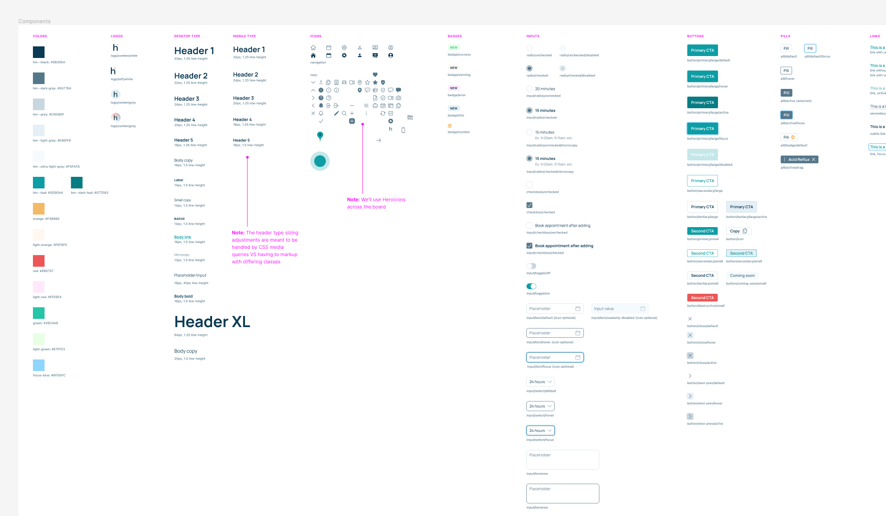

Simpler workflows, better tools, more bookings.
- Increased customers from 3k to 4k in 3 months
- Increased bookings & customer activations 20% MOM
- Increased revenue 15% MOM
- Increased customer adoption 20% MOM
- Led strategy, research, and design for new features (0-1)
- Led design system ongoing work
Heal.me is an all-in-one toolkit for holistic practitioners to run their businesses. It’s also a marketplace for clients to explore and book with thousands of practioners. I’ve been leading the design and product efforts to drive more adoption of the saas product while improving the SEO and UX flows (desktop and mobile prototypes) for more clients to book flawlessly.
Case Study:
- Project: Heal.me saas product
- Role: Product design, research, data analysis, UX writing, product manager
- Timeline: 4 weeks
- Team: myself, CTO, CEO, 2 engineers, sales reps
- Tools: Figma, Intercom, Google Docs, Google Sheets, Google Analyics, Maze
Problem Statement
The existing version of the product (i.e. the saas tool they use for scheduling and payments) was clunky to use, critical settings were buried/unclear, buggy, and hard to get started with. From the data I had, we know that if a new customer didn’t complete their profile in 7 days or less, they would churn.
Research & Discovery
- User Research: I groomed through Intercom tickets to see common complaints, frustrations, confusion areas, and room for opportunity. I also reached out and set up calls with 10 customers and started a Customer Council for speeding up ongoing research efforts.
- Market Analysis: Having worked at previous companies that do similar things, I had quicker time doing competitive research and knowing what best-in-class looked like.
- User Personas: I am not a big fan of personas, but I did use the Jobs-to-be-Done framework to map out what was missing from the product that typical customers need to do.
Ideation & Prototyping
- Ideation: Working with the CTO and CEO, we sketched out new flows and features to help reduce time to value.
- Wireframing & Prototyping: Using Figma, I designed low-fi wires and hi-fi mocks/prototypes for us to align around and begin to test with customers and to get the engineers up-to-speed and on board.

Design Implementation
- Design Principles: I designed and built out a brand new design system to speed this up and to be as easily usable by our customers who are less-than-tech savvy. Accessibility, clarity, and predictability are the basis of the design (i.e. the goal is for the customer to always know what they are doing on a given screen).
- Collaboration: I worked with the CEO, CTO, engineers, sales team, and customer success daily to ensure any new feedback was taken into account, and the deliverable designs were as clear and focused as possible.
- Testing & Iteration: I worked with 10 customers during an alpha-phase to help refine a few sticky points in the flows.
Final Design
- The finished design was focused around getting as many new customers to a baseline good profile as quickly and efficiently as possible. It was also based on being clear enough to add/edit your profile any time you saw fit, and to drive more usage of deeper features. I also designed this with smart defaults.
- Visual Design: Starting with the design system, I created all the atoms (colors and typography), then built up into molecules (form components, text components, interaction definitions, badge, etc.) and page layouts. This helped for visual consistency and clarity, and also helped engineering work quickly and focus less on the UI and more the UX.

Results & Impact
- Metrics & KPIs: We are still limited in terms of data visibility, but the main KPIs here were time to activation, number of bookings across the platform, and percentage of bookings done by our customers themselves.
- User Feedback: I did all the user-acceptance definition and testing, and then when we were comfortable with the stable release, we soft-launched this for a few days before notifying all customers. Our customers have loved the streamlined UI (more consistent and easier to use visually) and the simplified workflows (saving time and being less confusing).
- Business Impact: Activations (increased ~20%, more on this later), bookings (increased MOM 20%), and practitioner-created bookings (increased 74%!!) have all increased with no noticeable downside (i.e. less customer support tickets on How do I do X, Y, or Z).
Lessons Learned/Challenges
Not having great data is always a risk, and having to pull back on ideal flows and states is a frustrating reality of product development. We have limited engineering resources, and had to punt many high-value features and flows down the road. The ideal flow included a hyper-focused onboarding flow to get our customers to a baseline profile in just a few minutes. However, this had to be scrapped at the last minute and I had to update the default flow to work as best as possible without the hyper-focus on onboarding.
Key Takeaways
- Learnings: We discovered a lot of high-value concepts in the design process, but ruthlessly prioritized and held true to the goal of making the product simpler and more efficient, which would help drive long-term adoption.
- Improvements: We could have scoped this down a lot more from the get-go and released this sooner, however, the ideation process was also valuable for building the future roadmap out. The design system was the biggest hurdle but also the most valuable in the future for increasing velocity.
Conclusion
The saas product is the main source of value for our customers (i.e. where they set up and run their businesses from) and by not making it more efficient, we were leaving thousands of dollars on the table through wasted sales efforts and churn. The design system was made specifically for our less-than-tech savvy customers, prioritized clarity and simplicity, and improved on critical workflows for maximizing our most important KPI, bookings.